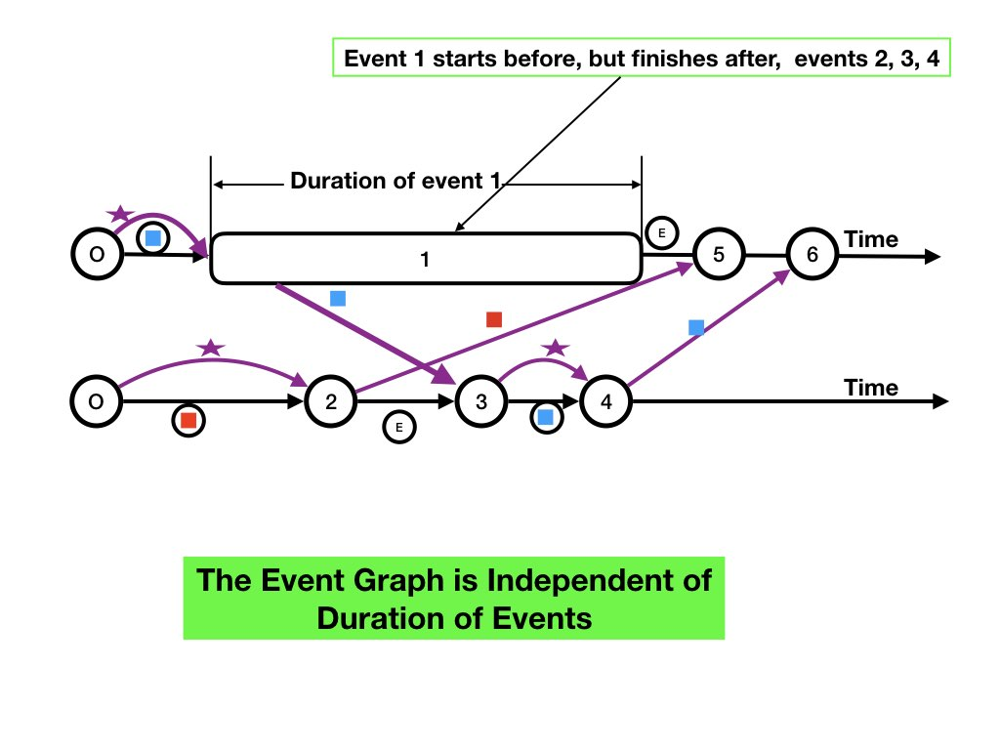

A model is an abstraction that helps in developing algorithms.
A model of a distributed system is defined by its components,
states, and state transitions. The components of a distributed
system are its agents and communication channels.
System Trajectories
The state of a distributed system is a tuple with an element of the
tuple for each of its agents and channels.
We analyze distributed systems such as the electrical power grid by
studying properties of its trajectories -- its states as
a function of time.
Let's look at the trajectory of a system described in the
previous page.
Figure 1 shows a trajectory of a system with two agents \(u\) and
\(v\) and channels between them.
The horizontal axes represent time flowing from left to right.
There is a timeline for each agent that shows the state of the agent
at each point in time.
The state of an agent \(u\) at time \(t\) is represented by a point
\(t\) units to the right of the origin on \(u\)'s timeline.
A message sent at time \(t\) by an agent \(u\) and received at
time \(t'\) be an agent \(v\) is represented by a line from point
\(t\) on \(u\)'s timeline to point \(t'\) on \(v\)'s timeline.
The state of the system at time \(t\) is shown diagramatically by the
vertical line at \(t\).

Fig.1: Example: A System Trajectory
Next we describe a simple model that deviates from the distributed
system described on the previous page in
several ways.
The model is adequate for reasoning about many
algorithms though it cannot represent trajectories.
The Model
The model does not deal with states of an agent while it is executing
a receive command.
The model only represents states of an agent before the agent
begins, and after it completes, executing a receive.
The model deals on with states in which all agents are idle.
The model is sequential -- at most one agent executes a
receive at a time while all other agents remain idle.
A state transition occurs when one, and only one, agent receives and
completes processing a message.
A computation is a sequence of one or more states where there
exists a transition from each state in the sequence to the next state
in the sequence.
We can think of a computation being generated by the following
while loop.
while there exists a nonempty channel:
select any one agent v with a nonempty channel
execute receive on v
Events
The change in state caused by an execution of a receive by
an agent \(v\) is specified by an event which is the 4-tuple:
the state of \(v\) before it executes receive,
the message received and the channel on which it is received,
the state of \(v\) after it completes execution of the
receive, and
for each output channel of v, the sequence of messages
sent on the channel during execution of the receive.
The states of agents other than \(v\) remain unchanged by the
transition.
The channels other than those listed in the event also remain
unchanged.
In any system state transition from \(S\) to
\(S'\) specified by an event \(e\), the post-transition state \(S'\)
is uniquely determined by the pre-transition state \(S\) and the event
\(e\).
Example of a Simple Distributed System
This example system has two agents u and v.
The system has channels in both directions between the agents and also
from each agent to itself.
The system has one blue token and one red token.
Agents send tokens to each other.
A token is either at an agent or in a channel.
Later, when we discuss file management, we will use a token to
represent exclusive access to a file and use the token color to
identify the file.
The diagram in figure 2 shows two states, \(S_{0}\) and \(S_{1}\), and
a transition from \(S_{0}\) to \(S_{1}\).
The diagram at the left of the figure shows a system state in
which agent \(u\) holds the blue token, agent \(v\) holds the red
token, channels \((u, v)\) and \((v, u)\) are empty, and channels
\((u, u)\) and \((v, v)\) each contain a wakeup message.
Fig.2: Example: State Transition
The diagram at the right shows a system state in
which \(u\) holds no tokens, \(v\) holds the red
token, channel \((u, v)\) has the blue token, channels \((u, u)\)
and \((v, u)\) are empty, and channel \((v, v)\) contains a wakeup
message.
The function receive below is self explanatory.
In the code for an agent, other_agent is the other
agent.
def receive(message, sender):
if sender == other_agent:
// message is a token
list_of_tokens_I_hold.append(message)
else:
# Sender is me. Message is wakeup.
# Send any token I hold.
token_I_hold = tokens_held.pop()
send(token_I_hold, other_agent)
# If I hold a token then wake me 1 second later.
if len(list_of_tokens_I_hold) > 0:
time.sleep(1)
send(wakeup, me)
Timing
The local clocks of agents are not synchronized.
When an agent executes time.sleep(1) the length of time
that it sleeps is unknown.
An agent's clock may be faster or slower than true time.
An agent may not start processing a message at the instant at which
the message arrives.
Multiple agents may be scheduled on the same resource and the time at
which an agent will execute a receive command is unknown.
The length of time that an agent sleeps has no bearing on the
correctness of the algorithm; however, it can make a difference to its
performance.
Example: Event
The event corresponding to the state transition is specified by the
state of \(u\) before the transition (\(u\) holds blue token), the
message wakeup that \(u\) receives on channel \((u, u)\),
the state of \(u\) after the transition (\(u\) holds no tokens), and
the message (blue token) sent by \(u\) along output channel \((u,
v)\).
The figure below illustrates the event.
Fig.3: Example: Representation of an Event
Example: State Transition Graph
The directed graph in which vertices are states and edges represent
state transitions is called the state transition graph..
A computation is a path in the state transition graph.
A computation may start in any state and be finite or infinite.
Fig.4: Example of State Transitions
Figure 4 shows a part of the state-transition graph for the
token-passing example.
Not all states are shown.
Channels from each agent to itself aren't shown so as to reduce
cluttering.
There is a wakeup message in the channel from an agent to
itself if the agent holds a token.
For example, in the diagram in the top left, there is a wakeup message
from each agent to itself because each agent holds a token.
A state transition in the diagram is labeled with the channel on
which the message is received that caused the transition.
Example: Computation
An example of a computation is the sequence \([S_{0}, \ldots S_{8}]\)
of states shown in figure 5 as a path in the state transition graph of
figure 4.
Fig.5: Example - A Computation is a Path in the State Graph
Event Graph of a Computation
Associated with a computation is a labeled, directed graph, called an
event graph in which vertices represent events of the computation.
Edges connect outputs of events to inputs of events (figure 3).
The graph has an edge from an event at an agent to the next event at
that agent; this event is labeled with the state of the agent between
the events and is called an agent edge.
The graph has an edge from each event in which a message is sent to
the event in which that message is received; this edge is labeled with
the message, and is called a message edge.
A computation is represented by an event graph with later events
placed to the right of earlier events.
Events at the same agent are placed on q horizontal line.
The diagramatic representation of a computation is similar to that of
a trajectory.
Example: Event Graph
The computation of figure 5 is shown in figure 6 as an event graph with
events placed in order.
Fig.6: Example - A Computation and its Event Graph
The top line in figure 6 shows the timeline -- the sequence of events
-- on agent \(u\) and the lower line shows the timeline for \(v\).
Events \(0\) and \(N\) represent the initial and final states of the
computation.
The outputs of events numbered \(0\) are the initial states of agents
and message channels, and the inputs of events labeled \(N\) are their
final states.
Let's look at the representation of event 1, shown in figure 3, as it
apears in figure 6.
Event 1 is at agent \(u\).
The inputs to event 1 are the state of \(u\) before the event and the
message wakeup received by \(u\) on channel \((u, u)\).
The outputs of event 1 are the state of \(u\) after the event and the
message blue token sent by \(u\) on channel \((u, v)\).
Before the event \(u\)'s state is that it holds the blue token.
After the event \(u\)'s state is that it holds no tokens show in the
figure by the letter "e" for empty.
Event Graphs in Trajectories
The 4-tuple specification of an event is independent of the duration
of the event.
The next figure shows a trajectory in which agent \(v\) executes
multiple receives while agent \(u\) is executing a single receive.
The event graph of a trajectory is specified in the same way as that
of a computation.
A vertex represents an event -- an execution of a single
receive.
Edges and labels are the same as in a computation.
Fig.6: Example - A Computation and its Event Graph
The event graph of the trajectory shown in figure 6 is the same as the
event graph of the computation shown in figure 5.
If we make the duration of events infinitisimally small -- shrink the
length of event 1 to a point in the figure -- then we get a diagram of
a computation with the same event graph as the trajectory.
Trajectories and Computations
Every trajectory has a computation with the same event graph, and
every computation has a trajectory with the same event graph.
The computation is obtained from a trajectory by making executions of
receive instantaneous in the trajectory.
In the first part of this course we study event graphs and
computations of distributed algorithms; we look at trajectories
later.
Agents in a distributed system cannot carry out actions synchronously
because they don't have access to a shared clock.
For example, an agent cannot add a value to a double-entry ledger at
the same instant as another agent subtracts the value.
Agents can collaborate by sending messages, and in the example, one
agent can subtract a value after another agent adds a value; the only
notion of time is before-after.
The event graph tells us how agents communicate and collaborate.
We will describe and reason about the correctness of many distributed
algorithms using event graphs.
Extending the Model to Different Channel types
The model can be extended to communication mechanisms other than
first-in-first-out channels.
Later, we will describe algorithms in which messages may be lost and
in which messages may be delivered out of order.
Extending the model to more than one channel from one agent to another
is straightforward.
Model Limitations
Progress
The model allows for an infinite computation in which an agent forever
processes messages that it sends itself, while other agents starve.
The model also allows for messages to be delayed on a channel forever.
Later, we extend the model to include the temporal logic concepts of
eventually and fairness and prove that computations progress
towards a goal.
No construct for Time
Processes can maintain accurate clocks by using
inexpensive atomic clocks on PC boards, Precision Time
Protocols (PTP) in local area networks, and Network Time Protocol
(NTP) servers.
The absence of time is a limitation of the model.
We will discuss the use of time in
algorithms.
Failure
The model does not deal with failure of agents or channels.
Dealing with failure is essential in distributed systems.
We discuss failure modes later.
Central Ideas: Summary
A state of the system is given by the states of its components -- agents
and communication channels.
The state of a channel is the sequence of messages in transit along
the channel.
An agent is either idle (waiting to process a message) or active (processing a
message).
An agent may send messages while it is executing an action.
A state transition occurs when a single agent receives and processes a
message.
A computation is a sequence of states where there is a transition from
each state to the next.
An event graph is a labeled directed acyclic graph in which vertices
represent events.
Concepts:
Distributed system, agents and channels -> system states as tuples -> state
transitions -> computations.